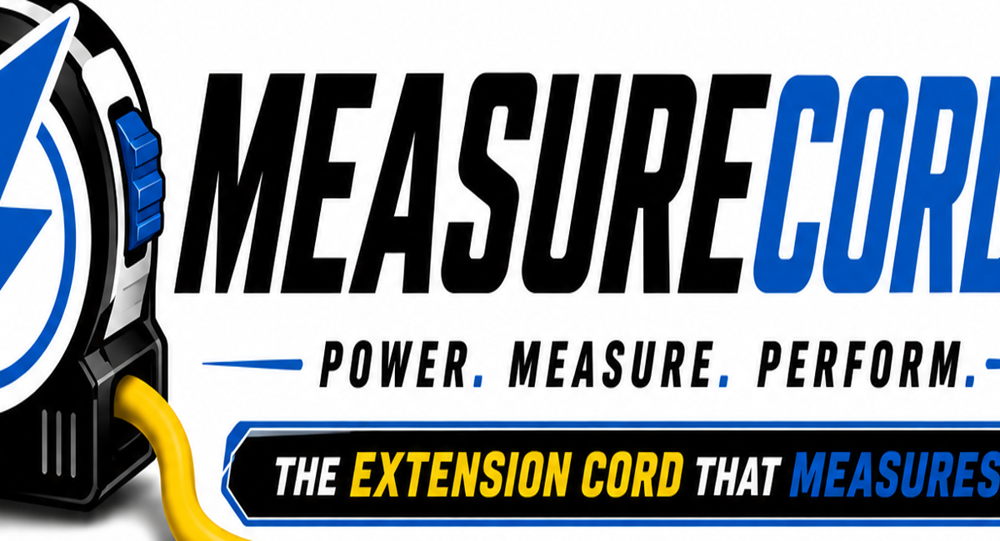
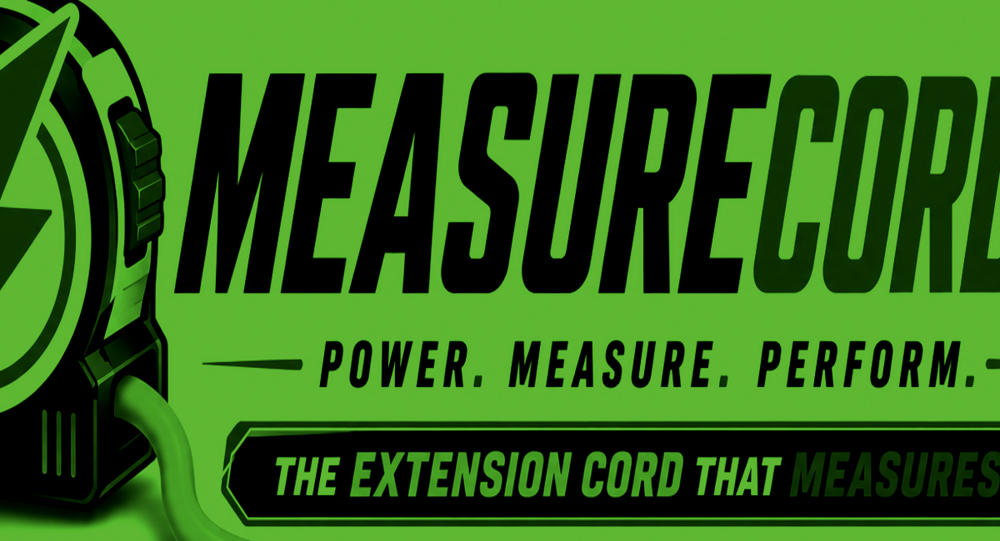

Measure as you work
Permanent measurement markings help users estimate and lay out distances without reaching for a separate tape measure.
MeasureCord combines a heavy-duty extension cord with an easy-to-read measurement scale printed directly on the cord.

Permanent measurement markings help users estimate and lay out distances without reaching for a separate tape measure.
Designed for contractors, electricians, landscapers, painters, HVAC technicians, DIYers and homeowners.
Future versions can include different lengths, heavy-duty models, retractable reels, generator/RV versions and other measuring utility products.
A closer look at the product concept, measurement scale and low-light visibility.



MeasureCord turns a familiar extension cord into a more versatile everyday tool.
For licensing, manufacturing, distribution or partnership inquiries:
MeasureCord is presented as a product concept. Specifications and features are subject to engineering, safety and manufacturing validation.